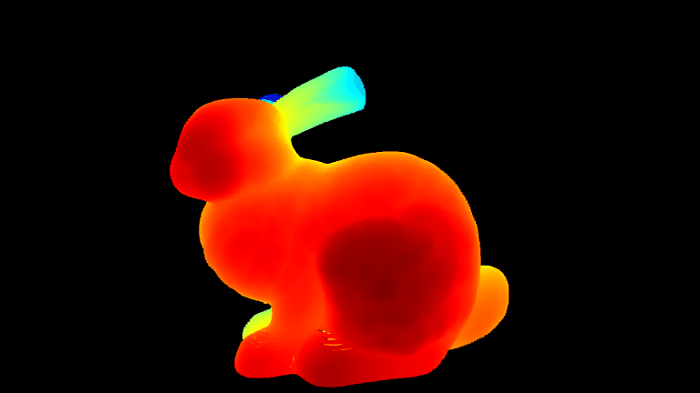

Using the animate function requires installation of Open3D which is not a prerequisite of C4dynamics.
For the different ways to install Open3D please refer to its official website.
A direct installation with pip:
A path to a single file model or a path to a folder containing multiple
model files.
If the provided path is of a folder, only model files should exist in it.
Typically supported files for mesh models are .obj, .stl, .ply.
Supported point cloud file is .pcd.
If your point cloud file has .ply extension, convert it to a .pcd first.
You may do that by using Open3D:
Initial Euler angles \([\varphi, \theta, \psi]\), in radians, representing
the model attitude with respect to the screen frame.
The screen frame is defined as follows:
x:righty:upz:outside
Default attitude [0, 0, 0].
modelcolorarray_like, optional
Colors array [R, G, B] of values between 0 and 1.
The shape of modelcolor is mx3, where m is either 1 or as
the number of the model files.
If m > 1, then the order of the colors in the array
should match the alphabetical order of the files in modelpath.
dtfloat, optional
Time step between two frames for the animation.
Default is 1msec.
savedirstr, optional
If provided, saves each frame as an image in the specified directory.
Default is None.
The animate function Uses Open3D library for 3D visualization.
Currently, only 321 Euler order of rotation is supported. Therefore if the stored angular state is produced by using other set of Euler angles, they have to be converted to a 321 set first.
1. The Stanford bunny is a computer graphics 3D test model
developed by Greg Turk and Marc Levoy in 1994 at Stanford University.
The model consists of 69,451 triangles, with the data determined by
3D scanning a ceramic figurine of a rabbit. The model can be downloaded from
The Stanford 3D Scanning Repository
>>> bunny=c4d.rigidbody()>>> # generate an arbitrary attitude motion>>> dt=0.01>>> T=5>>> fortinnp.arange(0,T,dt):... bunny.psi+=dt*360*c4d.d2r/T... bunny.store(t)>>> # generate paths for the model and output folder and run the animation function>>> modelpath='examples\resources\bunny.pcd'>>> bunny.animate(modelpath,cbackground=[0,0,0])

2. You can change the model’s color by setting the modelcolor parameter.
Here is an example of a mesh version of Stanford bunny with a custom color:
The jet model is consisted of multiple files, therefore the f16 rigidbody object
that was simulated with the above motion is provided with a path to the consisting folder.
4. It’s obvious that the animated model doesn’t follow the required rotation as simulated above.
This because the model initial postion isn’t aligned with the screen frame.
To align the aircraft body frame which defined as:
5. The attitude is correct but the the model is colorless.
Let’s give it some color;
We sort the colors by the jet’s parts alphabetically as it
assigns the values according to the order of an alphabetical
reading of the files in the folder.
Finally convert it to a list.